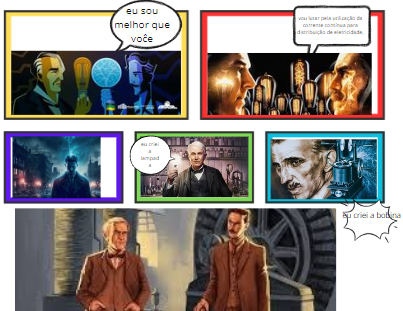

Ciências da Natureza Primeiro Trimestre
Relatório Circuitos
Esta prática visa permitir aos alunos explorar e compreender as variações entre circuitos com resistores em série e em paralelo, investigando o impacto na resistência total em cada configuração. A atividade prática proporcionou uma experiência enriquecedora, permitindo uma análise direta das diferenças entre os circuitos através de testes práticos.
Corrente Elétrica
Habilidades avaliadas: C2 - H6.
Objetivo da atividade: Realizar uma investigação sobre a "guerra das correntes", onde os estudantes, em duplas, elaboram os resultados da pesquisa em formato de história em quadrinhos. Na minha perspectiva, esta atividade foi altamente envolvente e estimulante, exigindo criatividade e inovação para uma execução excepcional.
Link para o acesso das atividades:
Evolucionismo
Habilidades avaliadas: C2 - H11
Objetivo da atividade: Fomentar a criatividade dos estudantes ao criar memes interativos sobre o tema do Evolucionismo e realizar simulações de seleção natural no software fornecido pela professora.
Opinião pessoal: Esta atividade proporcionou uma experiência divertida e desafiadora. Criar memes exigiu originalidade, enquanto os testes de seleção natural no simulador demandaram atenção e foco, resultando em uma abordagem prática e engajadora do tema.
Revisão Orgânica
Seu objetivo: Realizar uma apresentação abordando os tópicos revisados em sala de aula, reforçando a compreensão dos alunos sobre os conteúdos previamente discutidos.
Opinião Pessoal: Esta atividade foi fundamental para relembrar e aprofundar o entendimento dos temas previamente estudados, proporcionando uma oportunidade valiosa para revisão e consolidação do conhecimento.
Habilidades avaliadas nessa atividade: C1, H3 H4 H5
